Fun with Filters and Frequencies
Project 2 · Ariq Koh · CS180, Fall 2026 · convolution, edges and frequencies
This page covers Parts 1.1 to 1.3, 2.1 and 2.2 so far, and I'll add the other parts as I finish them. Click any image to open it at full size.
1.1 Convolution from scratch
Convolving an image with a kernel means flipping the kernel, sliding it over the
image, and at every position multiplying it against the pixels underneath and summing
the result. I wrote this in numpy only, first with four nested loops and then with
two, on a zero-padded copy of the image. scipy.signal.convolve2d is used only
as the reference to check against, and cv2 only reads and saves images.
Padding
Both versions pad the image with zeros first so the kernel can be centered on the edge pixels.
Four loops
The outer two loops visit every output pixel, and the inner two loops walk over the
kernel, accumulating one product at a time. The flip is the
[::-1, ::-1] on the kernel, which reverses it along both axes.
def convol_img(image, kernel, mode="same"):
# Perform convolution of the image with the given kernel (four for loop implementation)
kernel_h, kernel_w = len(kernel), len(kernel[0])
padded_image = pad_img(image, kernel, mode)
flipped_kernel = np.array(kernel)[::-1, ::-1]
height = padded_image.shape[0] - kernel_h + 1
width = padded_image.shape[1] - kernel_w + 1
output_image = np.zeros((height, width))
for i in range(height):
for j in range(width):
sum_val = 0.0
for ki in range(kernel_h):
for kj in range(kernel_w):
sum_val += padded_image[i + ki][j + kj] * flipped_kernel[ki][kj]
output_image[i][j] = sum_val
return output_imageTwo loops
The two inner loops are replaced by one array operation. I slice out the
kernel-sized window of the padded image at the current pixel, multiply it elementwise
with the flipped kernel, and sum the result with np.sum.
def convol_img_2loops(image, kernel, mode="same"):
# Perform convolution of the image with the given kernel (two for loop implementation)
kernel_h, kernel_w = len(kernel), len(kernel[0])
padded_image = pad_img(image, kernel, mode)
flipped_kernel = np.array(kernel)[::-1, ::-1]
height = padded_image.shape[0] - kernel_h + 1
width = padded_image.shape[1] - kernel_w + 1
output_image = np.zeros((height, width))
for i in range(height):
for j in range(width):
output_image[i][j] = np.sum(padded_image[i:i + kernel_h, j:j + kernel_w] * flipped_kernel)
return output_imageThe kernels
The box filter averages a 9×9 neighborhood, so each entry is 1/81 and the kernel
sums to 1. Dx and Dy are the finite difference operators. Because convolution flips the
kernel, convolving with [1, -1] gives f(x) − f(x−1),
the final value minus the initial one, so an edge that gets brighter to the right comes
out positive.
Dx = [[1, -1]]
Dy = [[1], [-1]]
def box_kernel(size):
# Generate a 2D box filter kernel (every entry is 1 / size^2 so it sums to 1)
kernel = []
for i in range(size):
row = []
for j in range(size):
row.append(1 / size**2)
kernel.append(row)
return kernelChecking against scipy
The reference call zero-fills the border the same way my padding does. I run all three implementations on the same image and kernel, in both padding modes, and take the largest difference between their outputs.
def convol_with_scipy(image, kernel, mode="same"):
return scipy.signal.convolve2d(image, kernel, mode=mode, boundary="fill", fillvalue=0)
# in part1.py, for each of the box filter, Dx and Dy, and for mode in ["same", "full"]:
cimg, t_four = timed(convol_img, img, kernel, mode)
c2img, t_two = timed(convol_img_2loops, img, kernel, mode)
scimg, t_scipy = timed(convol_with_scipy, img, kernel, mode)
max_diff = max(np.abs(cimg - scimg).max(), np.abs(c2img - scimg).max())Results
I read the photo as grayscale with cv2.imread(..., cv2.IMREAD_GRAYSCALE) and
convolved it with the 9×9 box filter, Dx and Dy, using "same" padding. The
four-loop, two-loop and scipy outputs are identical, and the saved images
below are from my four-loop version.
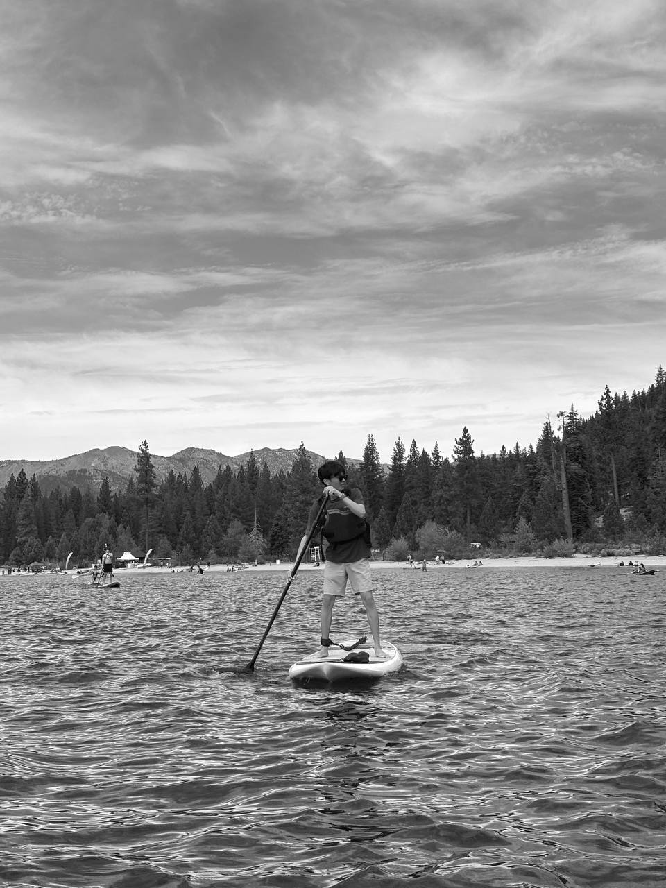
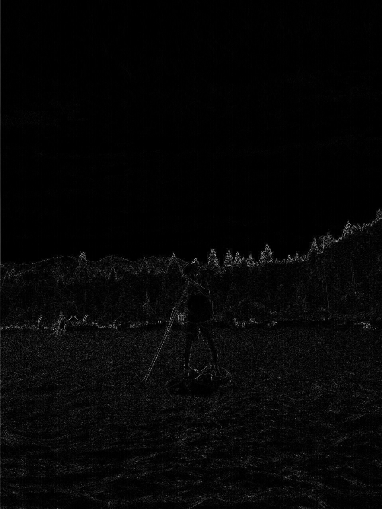
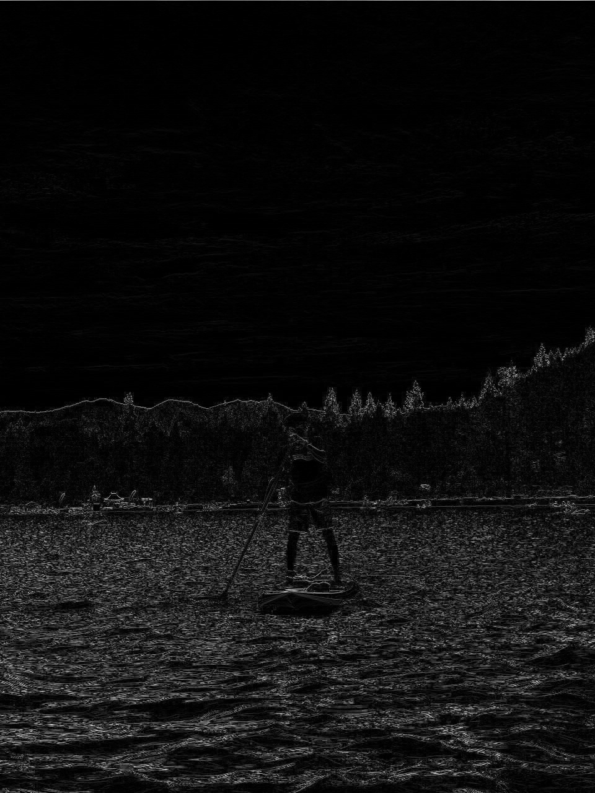
Runtime
I timed each implementation once on the full 1280×960 image.
| Kernel | Mode | Four loops | Two loops | scipy |
|---|---|---|---|---|
| 9×9 box | same | 26.20 s | 2.58 s | 0.084 s |
| 9×9 box | full | 26.25 s | 2.49 s | 0.084 s |
| Dx | same | 0.93 s | 2.44 s | 0.009 s |
| Dx | full | 0.95 s | 2.46 s | 0.008 s |
| Dy | same | 1.00 s | 2.51 s | 0.012 s |
| Dy | full | 0.98 s | 2.47 s | 0.011 s |
The four-loop version does one Python-level multiply-add per kernel entry per pixel, about 100 million of them for the 9×9 box filter, so its time grows with the kernel: 26 s for the box filter against about 1 s for the two-entry Dx and Dy. The two-loop version makes a handful of NumPy calls per pixel instead, so its time barely depends on the kernel, about 2.5 s for all three. That makes it roughly 10 times faster for the box filter, but about 2.5 times slower for Dx and Dy, where the four-loop version only has two products to add and NumPy's per-call overhead costs more than it saves. scipy is much faster than either: 0.084 s for the box filter, about 30 times faster than my two-loop version and 300 times faster than the four-loop one, and about 0.01 s for Dx and Dy, because its loops run in compiled code instead of Python.
Boundary handling
Both implementations pad with zeros, which is the fill convolve2d uses by
default, so the outputs match scipy up to floating-point rounding (a largest
difference of 6.3e-13 for the box filter and 0 for Dx and Dy). Zero padding only affects
the outermost pixels: the box filter darkens the outer 4 pixels because it averages in
zeros, and Dx and Dy pick up a one-pixel edge along the left and top border respectively.
scipy can also reflect or wrap at the border, but I only implemented zero fill.
1.2 Finite difference operator
I convolved the cameraman image with the finite difference operators from Part 1.1,
using my own four-loop convolution with "same" padding. Dx gives the partial derivative
Ix of the image I in x and Dy gives the partial derivative Iy in y. The gradient magnitude,
sqrt(Ix² + Iy²), combines the two into a single edge-strength
image that doesn't depend on which way the edge points.
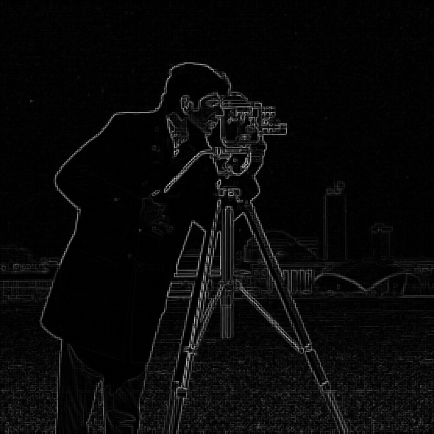
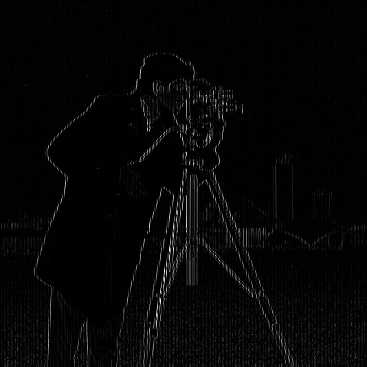
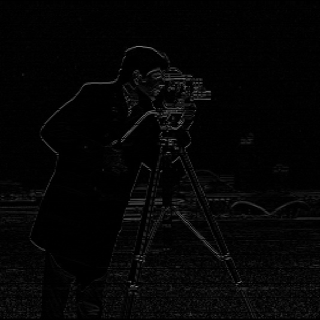
Choosing a threshold
To get a binary edge image I keep the pixels of the gradient magnitude above a threshold. Figure 9 shows four choices.
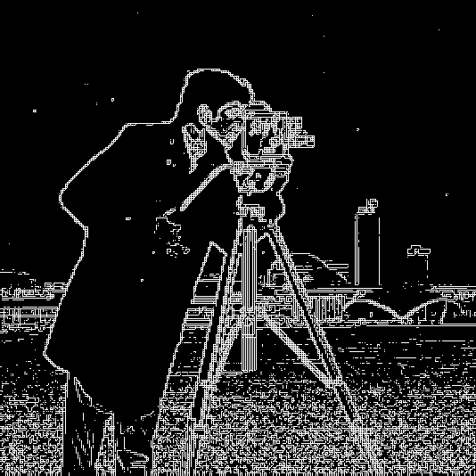
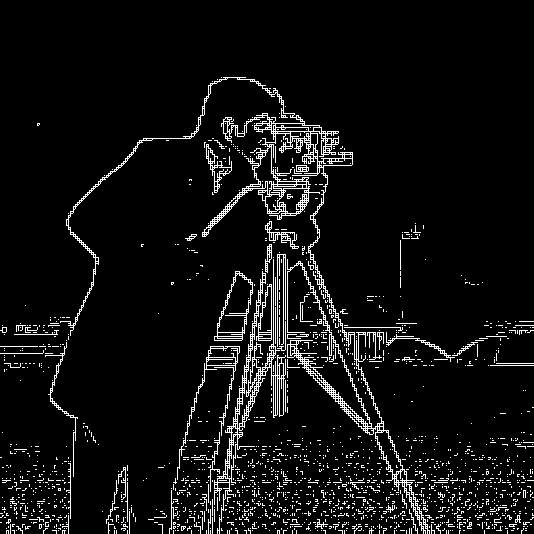
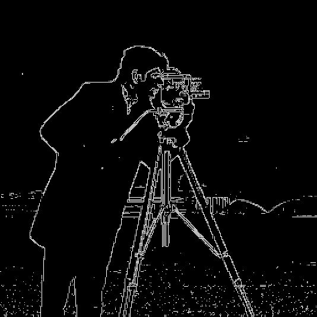
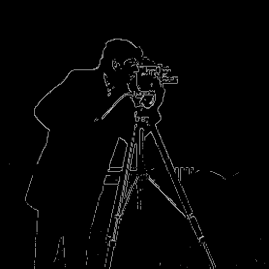
The threshold trades noise against real edges. At 15 the fine texture of the grass and a few specks in the sky are strong enough to pass, so noise crowds the real edges. At 80 the noise is gone, but so is a lot of true structure: the details of the camera and the skyline at the horizon are broken up or missing. I chose 45. It removes most of the grass texture while keeping the cameraman's outline, the camera, the tripod legs and most of the horizon.
1.3 Derivative of Gaussian (DoG) filter
Finite differences amplify noise, which is why the edge maps in Part 1.2 pick up the
texture of the grass. Blurring first suppresses it. I built a 13×13 Gaussian with
σ = 2 as the outer product of the 1D kernel from
cv2.getGaussianKernel with itself,
blurred the image with it, and repeated the Part 1.2 procedure on the blurred result.
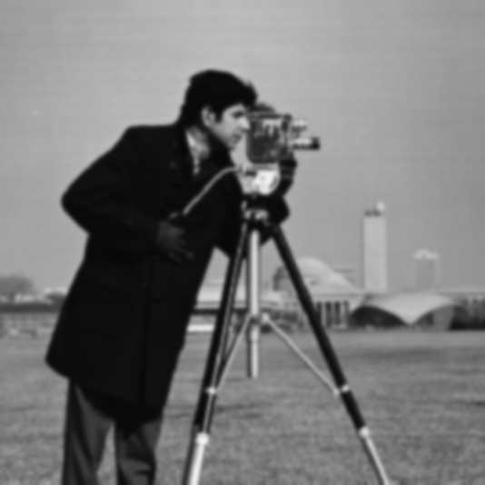
DoG filters
Convolution is associative, so blurring the image and then taking a finite difference is the same as convolving the image once with the Gaussian already convolved with the difference operator. I convolved the Gaussian with Dx and with Dy, using my own convolution from Part 1.1 with "full" padding, to get the two derivative of Gaussian (DoG) filters:
Here I is the input image, G is the Gaussian, Dx and Dy are the difference operators from Part 1.1, and ∗ is convolution. The filters come out 13×14 and 14×13, one row or column larger than the Gaussian because Dx and Dy have two entries.
Blurred against unblurred
Figure 12 compares the gradient magnitude and the binarized edges without blur (Part 1.2) and with it. The blurred gradients are much weaker, with a maximum of 39.6 against 221, so I used a lower threshold of 15 for them, chosen the same way as before, instead of 45. The blur and the derivatives here mirror the image at the border instead of zero padding it, so the blur doesn't darken the edges and no fake frame appears.


DoG results
Applying the DoG filters directly to the original image, in one convolution each, gives the same result as blurring first. The largest difference from the two-step version is 2.5e-13 for Ix, 2.1e-13 for Iy and 2.7e-13 for the magnitude, which is floating-point rounding, and none of the 285,156 pixels differ in the binarized edges.
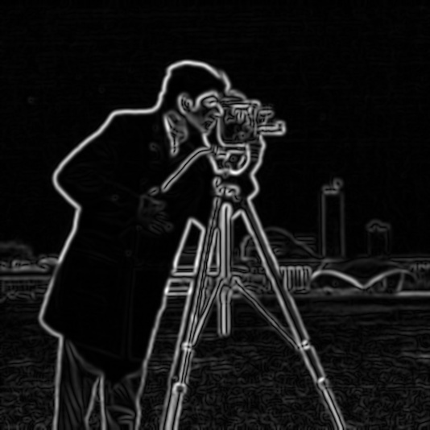
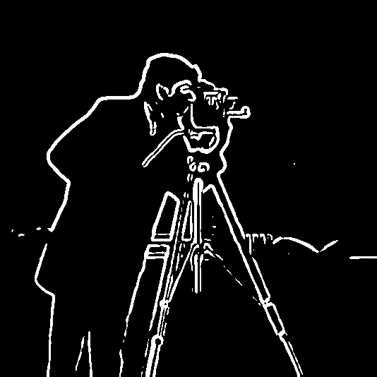
What differences do you see?
Blurring removes the noise. Without it, the grass texture and the specks in the sky pass a low threshold, and it takes a high one (45) to get rid of them, which also thins out real edges. With the blur the grass produces almost no false edges, so a much lower threshold keeps the outline, the camera, the tripod and much of the horizon. The cost is sharpness. The edges come out several pixels wide instead of one or two, and small details such as the parts of the camera are smoothed into fewer, rounder shapes.
2.1 Image sharpening
Unsharp masking sharpens an image by boosting its high frequencies. A Gaussian blur G keeps only the low frequencies, so subtracting the blurred image from the original leaves the high frequencies: the edges and fine texture that the blur removed. Adding some of that back sharpens the image, and α sets how much:
Here δ is the unit impulse, a kernel with a 1 in the center and 0 everywhere else, so that I ∗ δ = I. Convolution is linear, so blurring, subtracting and adding back collapse into one convolution with the kernel (1 + α)δ − αG. That kernel sums to 1, so the overall brightness doesn't change. I build it once and convolve the image with it, mirroring the border. It matches blurring, subtracting and adding back to within 7e-13.
def unsharp_kernel(size, sigma, alpha):
# Unsharp mask as a single kernel. image + alpha * (image - image * G) is linear in the image, so it
# equals image * ((1 + alpha) * impulse - alpha * G), where the impulse is a 1 at the center of the kernel
kernel = -alpha * gaussian_kernel_cv(size, sigma)
kernel[size // 2, size // 2] += 1 + alpha
return kernel
def unsharp(image, kernel, sigma, alpha=1.0):
# Apply unsharp masking with a single convolution, alpha is how much of the high frequencies to add back
return convol_symm_with_scipy(image, unsharp_kernel(kernel, sigma, alpha))taj.jpg
I used a 5×5 Gaussian with σ = 1 and α = 1. Figure 14c is the high-frequency component, scaled up 4× and shifted to mid gray so that both the positive and the negative detail show up.

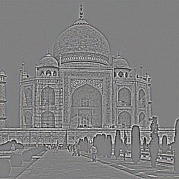
Sharpening amount
Figure 15 varies α with the same Gaussian. At 0.5 the change is mild, at 1 and 2 the edges are clearly crisper, and at 4 the image starts to look overdone, with halos along the edges of the trees and a gritty texture on the marble.
Blur, then sharpen
To see how much sharpening can win back, I blurred taj.jpg with a stronger 11×11
Gaussian (σ = 1.5), sharpened that with the same Gaussian, and compared the result
with the original by eye. I used α = 2, which brought the edges back without visible halos.
Sharpening gets back some of what the blur took: the edges of the arches and the trees look crisper again, and the result is clearly closer to the original than the blurred image is. It doesn't restore the original, though. Detail that the blur wiped out completely, like the fine carving on the dome, can't come back, because sharpening only amplifies what is left. Pushing α higher only adds halos and noise, as in Figure 15d.
Other images
I ran the same procedure on two of my own photos, a plate of duck and fish in an aquarium, both slightly out of focus.
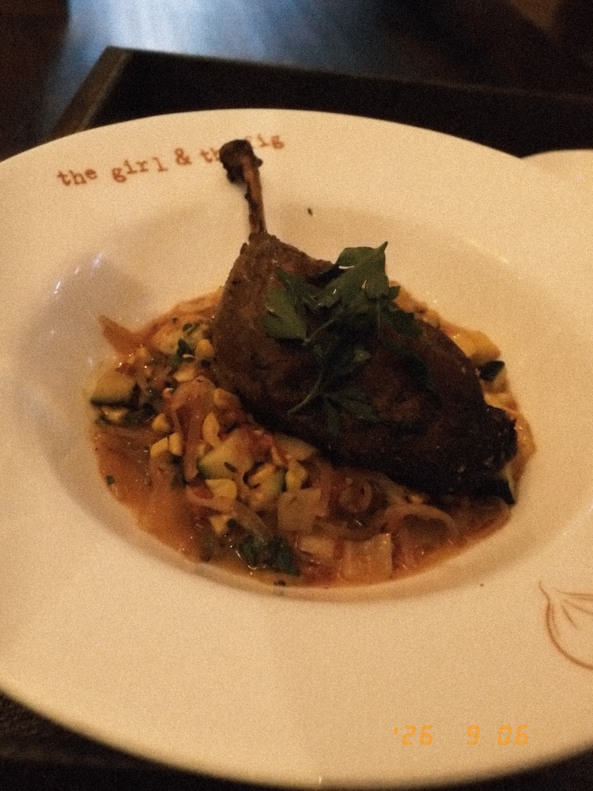
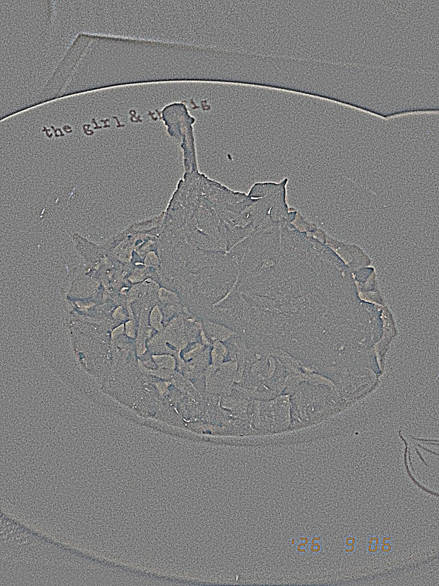
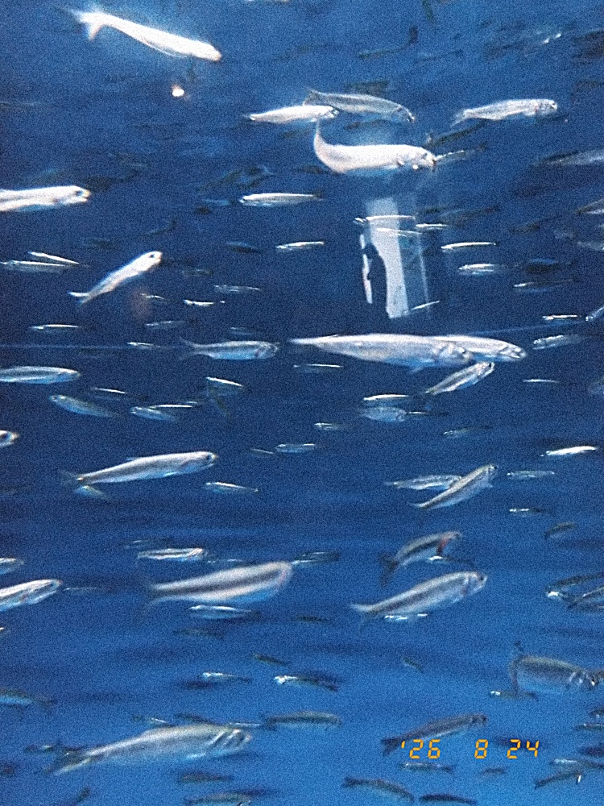
The lettering on the plate and the veins of the parsley come out crisper, and the edges and fins of the fish are firmer. Both photos have visible film grain, and sharpening amplifies it along with the detail (it is clearly visible in Figure 17c), which is the main cost here.
2.2 Hybrid images
A hybrid image (Oliva, Torralba and Schyns, SIGGRAPH 2006) mixes the high frequencies of one image with the low frequencies of another. Up close the eye picks up the fine detail, so you see the first image. From far away that detail is too small to see, and only the low frequencies are left, so you see the second. I take the high frequencies of I1 as the image minus its Gaussian blur, which is the same as convolving it with an impulse minus a Gaussian, scale them by a gain k, and add the blur of I2:
Here Gσ is a Gaussian with standard deviation σ pixels, δ is the unit impulse, and σ1 and σ2 set the two cutoff frequencies. The gain k makes the high frequencies stronger than in the original image, because a plain difference of two blurs is faint next to the low frequencies and the hybrid otherwise reads as a mix of both images up close. The blur is done as two 1D passes, because the σ needed here would make a single 2D kernel slow.
def gaussian_blur(image, sigma):
# Blur with a separable Gaussian (two 1D passes), much faster than one 2D kernel when sigma is large
size = 2 * int(np.ceil(3 * sigma)) + 1
kernel_1d = cv2.getGaussianKernel(size, sigma)
return convol_symm_with_scipy(convol_symm_with_scipy(image, kernel_1d), kernel_1d.T)
def hybrid_image(im1, im2, sigma1, sigma2, gain=1.0):
# High frequencies of im1 (the image minus its blur, times a gain so they stand out) plus the low
# frequencies of im2 (its blur)
high = gain * (im1 - gaussian_blur(im1, sigma1))
low = gaussian_blur(im2, sigma2)
return high + lowAligning the images
The two images have to line up, or the low-frequency image reads as a different thing behind the detail. I pick two matching points on each image, the eyes for Derek and Nutmeg, and the course starter code translates, scales and rotates the first image so that the two points land on top of each other. I picked the points by hand and stored them in the code instead of clicking them. The alignment pads and rotates in black borders, so I then crop both images to the largest rectangle that is real picture in both.
Derek and Nutmeg
This is my favorite result, so it gets the whole process. Derek supplies the high frequencies and Nutmeg the low ones.
Figure 20 shows each step. The two aligned images (20a and 20b) are cropped to 433×686. Derek's image has its blur removed (σ1 = 2.5), leaving only the edges (20c, doubled and shifted to mid gray), and Nutmeg's is blurred (σ2 = 12, 20d). Adding them gives the hybrid (20e).
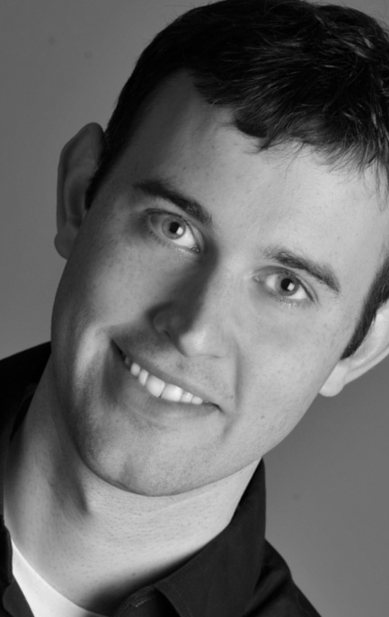
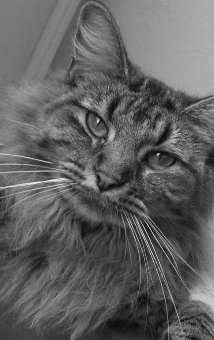
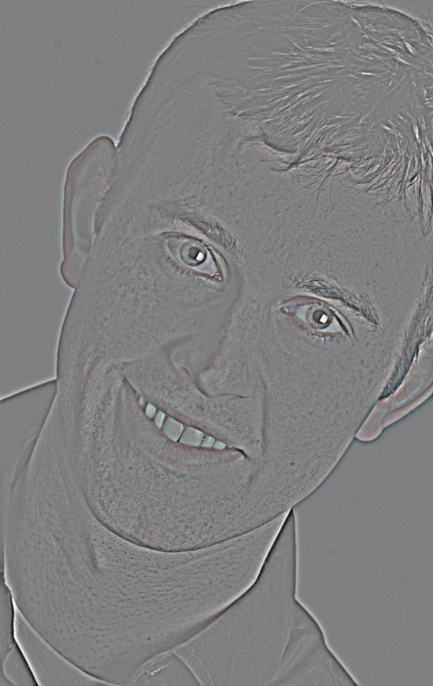
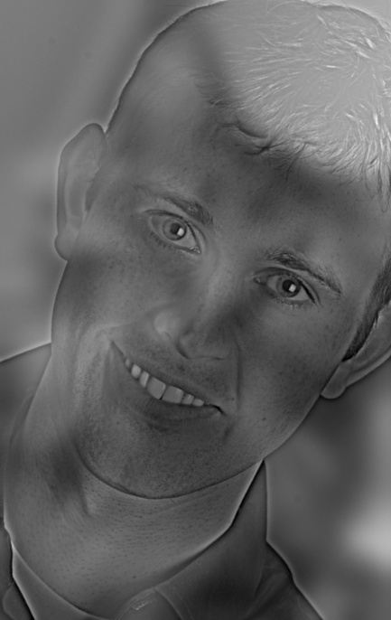
Figure 21 shows the log magnitude of the 2D Fourier transform of the grayscale version of each image, all on the same brightness scale, with the lowest frequencies in the center. The two inputs have energy at all frequencies. Derek's high-pass image (21c) has an empty center, because the low frequencies were subtracted out. Nutmeg's low-pass image (21d) is bright only near the center and dark further out, because everything above the cutoff was blurred away. The hybrid (21e) has both: Nutmeg's low frequencies in the middle and Derek's high ones around them. The bright cross through the center of each spectrum comes from the image borders.
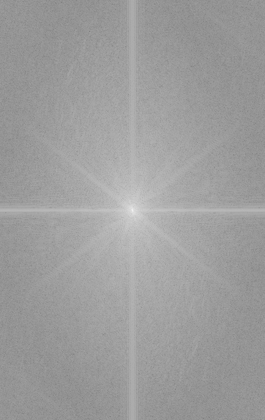
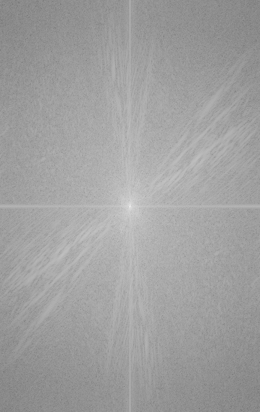
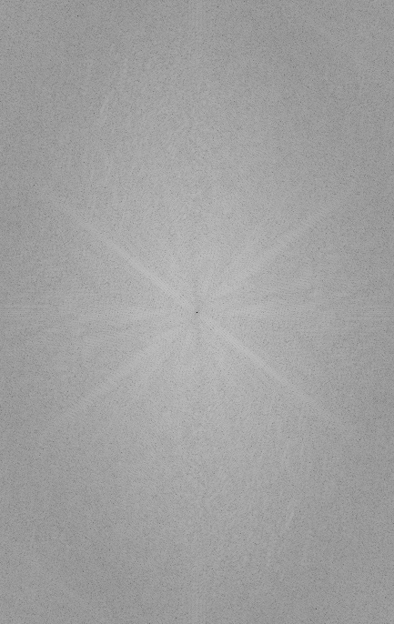
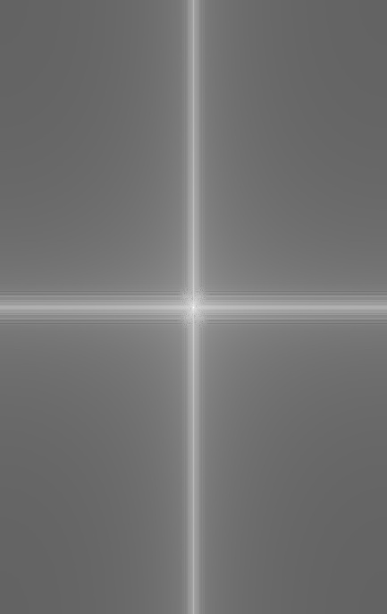
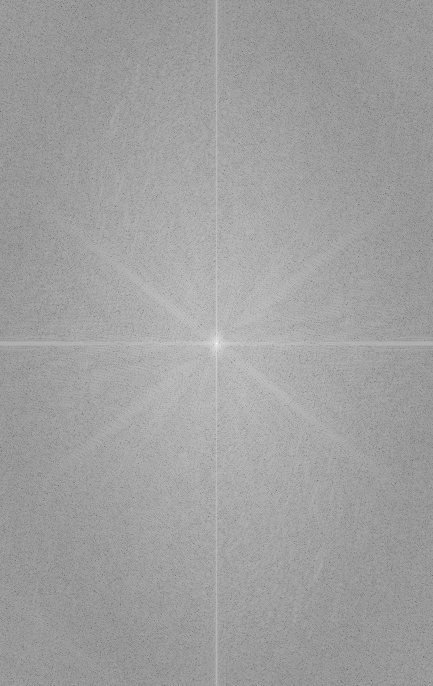
Viewing it
Drag the slider in Figure 22 to move away from a hybrid. Close up you should see the high-frequency image, and as it gets smaller the low-frequency one takes over. The buttons switch between all four hybrids.
Cutoff frequencies
I tuned σ1, σ2 and the gain separately for each pair, by making a hybrid for many combinations and judging every one twice: at the size the slider starts at, for the near view, and shrunk to about a fifth of that for the far view. A good hybrid needs both, and the two pull against each other. A small σ1 keeps only the finest detail, which disappears when the image is shrunk, so the second image takes over, but it also leaves less of the first image to see up close. A larger σ2 removes more of the second image's detail from the near view, but leaves only a smear from far away. Raising the gain fixes part of that, since it makes the first image stronger up close without changing which frequencies it contributes.
The best settings depend on the images. Derek's face and Nutmeg's fur are large, and both look right at σ1 = 2.5 and σ2 = 12. The two beach photos are much alike, so I had to keep the frequencies far apart to see any difference, with a fine σ1 = 1.5 and σ2 = 8, and even then it stays subtle. The dessert photos are larger (862 px tall against 686 for Derek), so they take a larger σ1 = 4. A Gaussian with standard deviation σ pixels has a frequency response that falls to 61% at 1/(2πσ) cycles per pixel, which I take as the cutoff.
| Hybrid | High frequencies from | Low frequencies from | High-pass | Low-pass | Gain |
|---|---|---|---|---|---|
| Derek and Nutmeg | Derek | Nutmeg | σ = 2.5 (0.064) | σ = 12 (0.013) | 2 |
| Labubu | Purple doll | Brown doll | σ = 3 (0.053) | σ = 12 (0.013) | 2 |
| Bird | First beach photo | Second beach photo | σ = 1.5 (0.106) | σ = 8 (0.020) | 2 |
| Dessert | Meringue tart | Red pastry | σ = 4 (0.040) | σ = 12 (0.013) | 2 |
σ is in pixels, and the cutoff in cycles per pixel is in brackets.
More hybrids
These use my own photos. For each one the two inputs are shown in the order high frequencies, then low frequencies, followed by the hybrid. Together with Derek and Nutmeg they morph a person into a cat, one doll into another and one dessert into another, and one of them changes the viewpoint instead of the subject.
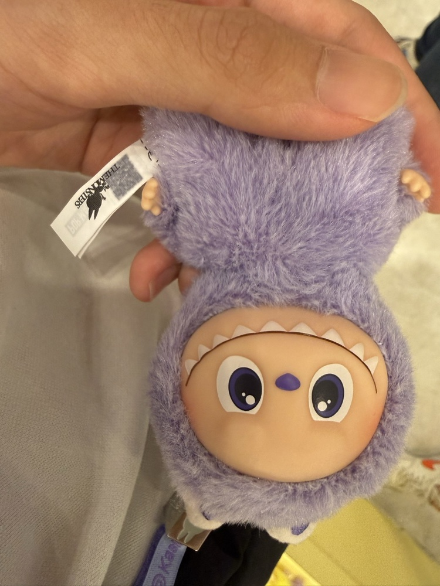
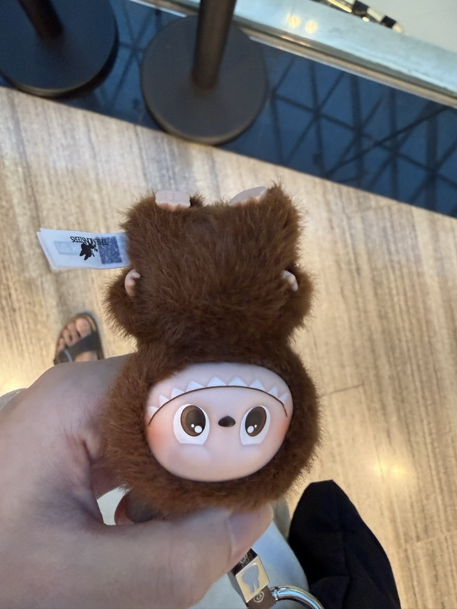
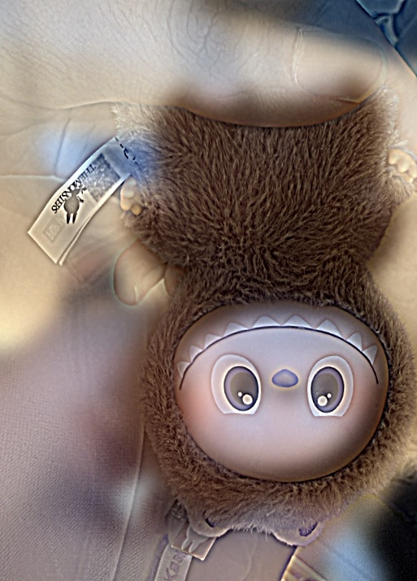
The two dolls are held in almost the same pose, so aligning on their eyes lines up the faces. Up close you see the purple doll's fur and face detail, and from far away it turns into the brown one.
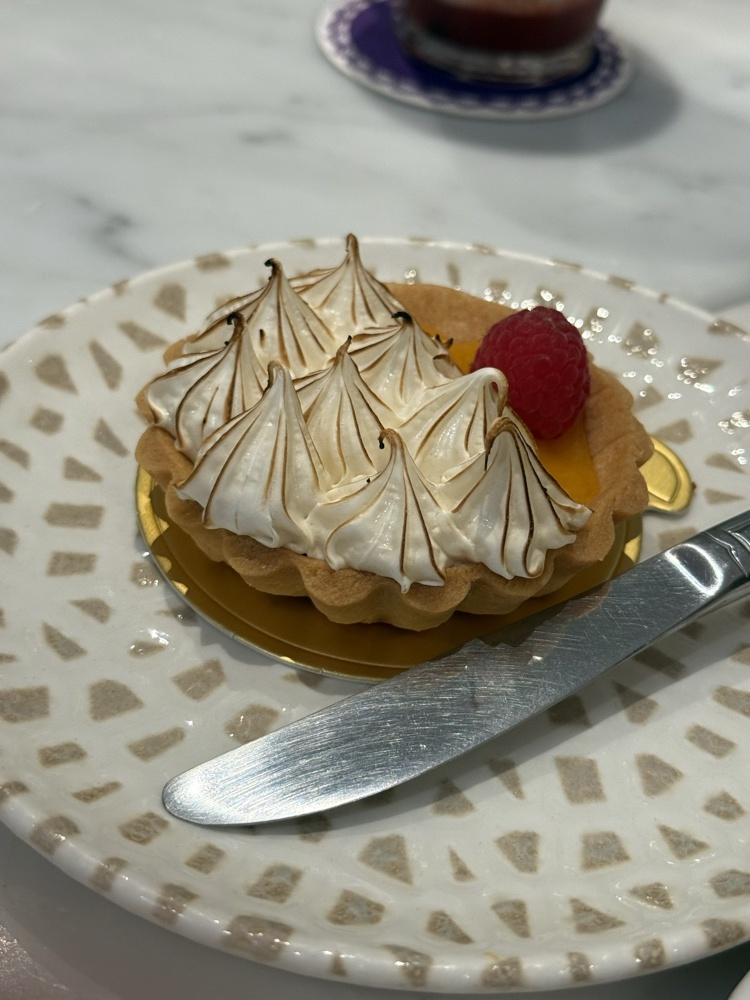
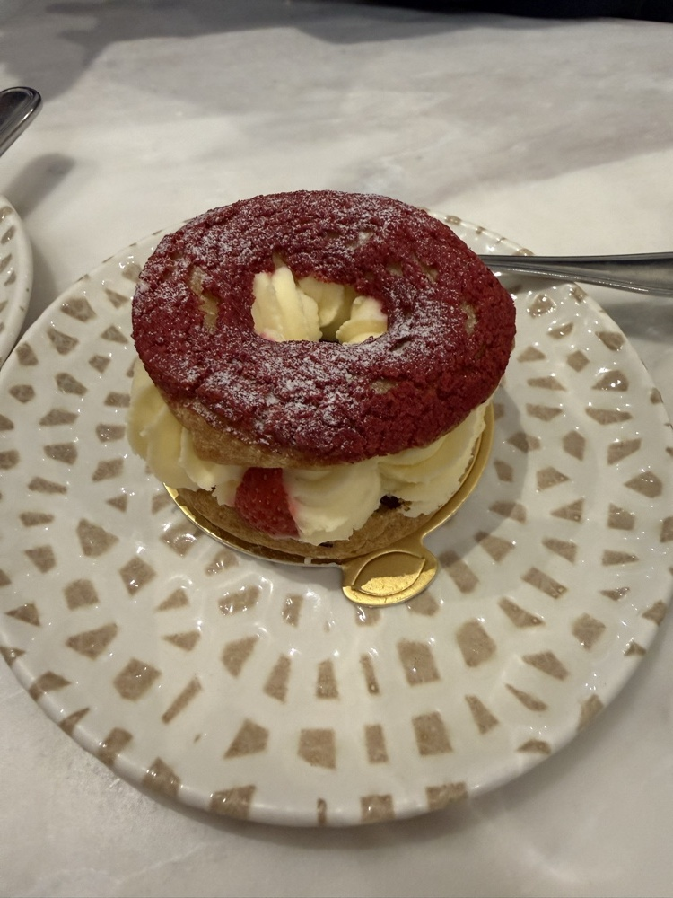
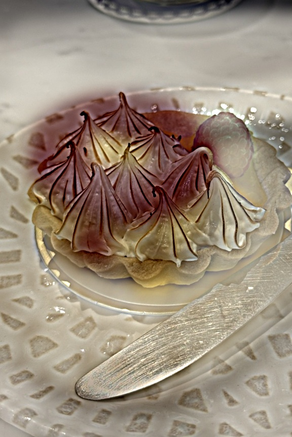
This one morphs one dessert into another. I swapped the roles compared with the other pairs, because it looks better with the tart's sharp meringue peaks on top: they are drawn over the red pastry up close, and from far away only the red round shape is left.
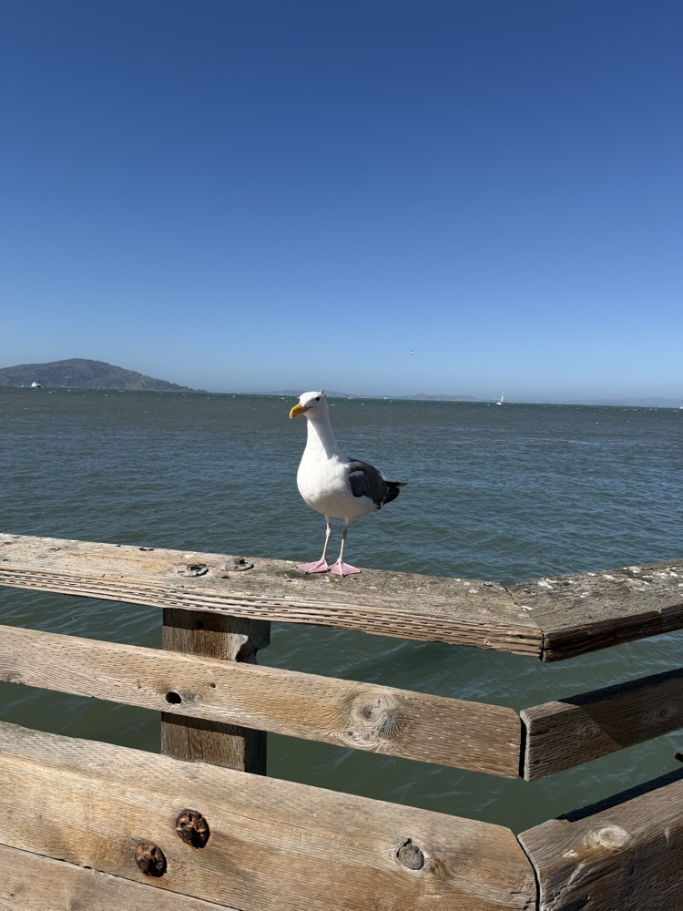
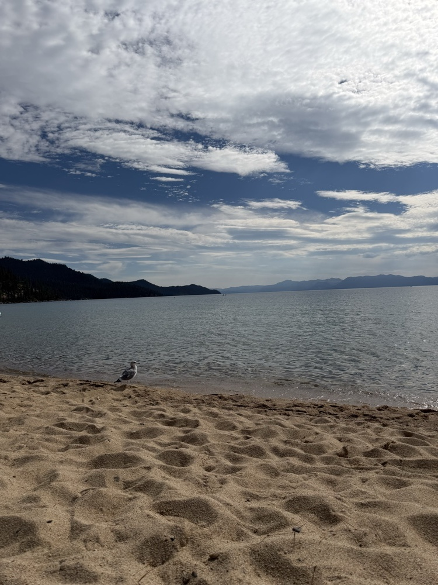
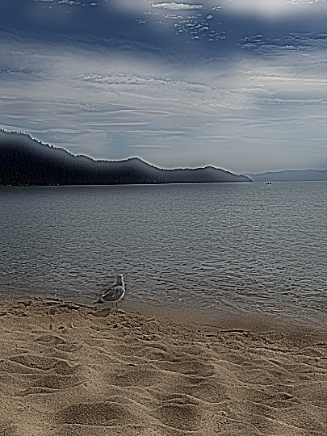
Here the same beach and gull are seen from two distances, which is a change over time or position instead of a change of object. I aligned the two on the gull's head and tail, so its size matches. This is the subtlest of the four, because the scenes are so alike: the sand and gull detail comes from the first photo and the hill and sky layout from the second, and there is no dramatic switch.